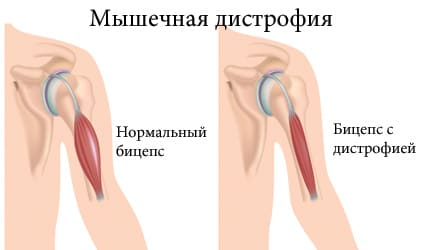
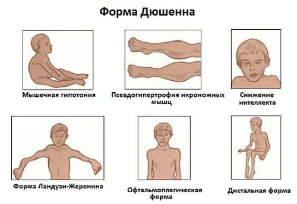

Мышечная дистрофия — это генетическое нарушение, которое вызывает постепенное истощение и ослабление мышц. Это нарушение может проявиться в любом возрасте. У некоторых детей симптомы этого заболевания появляются в младенчестве, в то время как у других не наблюдается никаких проблем вплоть до взрослого возраста. Существует несколько форм мышечной дистрофии, отличающихся по степени тяжести.
СИМПТОМЫ
Симптомы мышечной дистрофии могут начаться в младенчестве, тем не менее у большинства детей этого не происходит до 5—6 лет. Некоторые формы мышечной дистрофии могут не проявляться до подросткового или взрослого возраста. У младенцев и детей самыми распространенными симптомами возможной мышечной дистрофии являются:
• ребенок чаще спотыкается и падает, чем обычно малыши и дошкольники;
• ребенку тяжело стоять;
• ребенку сложно пинать предметы;
• ребенок большую часть времени ходит на носочках;
• ребенку сложно подниматься по лестнице;
• у ребенка могут развиться аномально большие икроножные мышцы (проблема, известная как ложная гипертрофия голени);
• общая мышечная слабость.
Большинство форм мышечной дистрофии развиваются только у мальчиков. Хотя у девочек может быть генетическое нарушение» симптомы, как правило, отсутствуют. Запомните, симптомы и тяжесть мышечной дистрофии могут сильно варьировать. Некоторые случаи настолько легкие, что их не диагностируют на протяжении всей жизни человека. Тем не менее в большинстве случаев будут некоторые из вышеперечисленных симптомов. |
ПРИЧИНЫ
Наш организм производит особые белки, которые помогают строить и поддерживать мышцы. У людей с мышечной дистрофией есть нарушение гена, отвечающего за производство белков. Поскольку тело не может в достаточной мере производить белки для поддержания здоровья мышц, мышцы медленно ослабевают и со временем истощаются.
ДИАГНОСТИКА
Если у вас есть сомнения касательно силы мышц вашего ребенка, обратитесь к врачу. Он соберет полную историю болезни и проведет обследование. Важно сообщить врачу, если в семье встречались случаи мышечных расстройств. Существует несколько видов анализов крови, которые могут выявить признаки нарушений в мышцах. Для выявления отклонений, которые могут указывать на диагноз мышечной дистрофии, также может быть проведен анализ ДНК. Поговорите с врачом для получения более подробной информации.

ТИПЫ
Существует два основных типа мышечной дистрофии, которые чаще всего встречаются у детей.
Мышечная дистрофия Дюшенна. Это самая распространенная и самая тяжелая форма мышечной дистрофии. Ею болеет приблизительно 1 мальчик из 3500. У девочек могут быть нарушения гена, но у них не бывает симптомов. К 5 годам у мальчиков с этим типом мышечной дистрофии обычно начинают проявляться признаки заболевания. Чаще всего в первую очередь поражаются мышцы таза. По мере того как заболевание прогрессирует, страдают мышцы спины, рук, плеч и ног. Большинству детей, страдающих мышечной дистрофией Дюшенна, еще до наступления пубертатного периода понадобится инвалидная коляска. Иногда это заболевание поражает мышцы, участвующие в акте дыхания, и могут потребоваться специальные аппараты для искусственной вентиляции легких. К сожалению, у детей, страдающих мышечной дистрофией Дюшенна, средняя продолжительность жизни составляет примерно 20 лет.
Мышечная дистрофия Беккера. Этот тип мышечной дистрофии похож на мышечную дистрофию Дюшенна, но он реже встречается (примерно у 1 мальчика из 30 000) и обычно менее опасен. У девочек не бывает симптомов мышечной дистрофии Беккера. Симптомы обычно не проявляются до подросткового возраста. Как и в случае мышечной дистрофии Дюшенна, мышечная дистрофия Беккера обычно начинается с ослабления мышц таза, позднее захватывающего плечи, спину и, реже, руки и ноги. У большинства детей с мышечной дистрофией Беккера нормальная продолжительность жизни, и им, как правило, не требуется инвалидная коляска. Существует несколько других более редких форм мышечной дистрофии, но мы не будем их здесь обсуждать. Для получения более подробной информации обратитесь к своему терапевту.

ЛЕЧЕНИЕ
К сожалению, на данный момент случаи излечения от мышечной дистрофии не описаны. Тем не менее врачи и исследователи усердно работают, пытаясь найти способ борьбы с этим заболеванием. Хорошая новость в том, что сейчас существует множество видов лечения, которые могут остановить развитие заболевания и улучшить качество жизни больного. Лечение мышечной дистрофии требует многостороннего подхода и участия нескольких специалистов. Физиотерапия и специальные корсеты могут помочь поддержать мышечный тонус и силу. В команде лечащих врачей должен быть физиотерапевт, чтобы обеспечить правильное выполнение упражнений. Было обнаружено, что лечение стероидами замедляет истощение мышц, что может помочь ребенку дольше ходить. По мере того, как заболевание прогрессирует и дыхательные мышцы, и сердце начинают слабеть, может потребоваться использование специальных аппаратов для искусственной вентиляции. Дети с мышечной дистрофией более склонны к легочным инфекциям, которые требуют незамедлительного лечения. Иногда детям с мышечной дистрофией Дюшенна требуются инвалидные коляски.
Здоровье ребенка от докторов Сирс / Сирс У. и др.